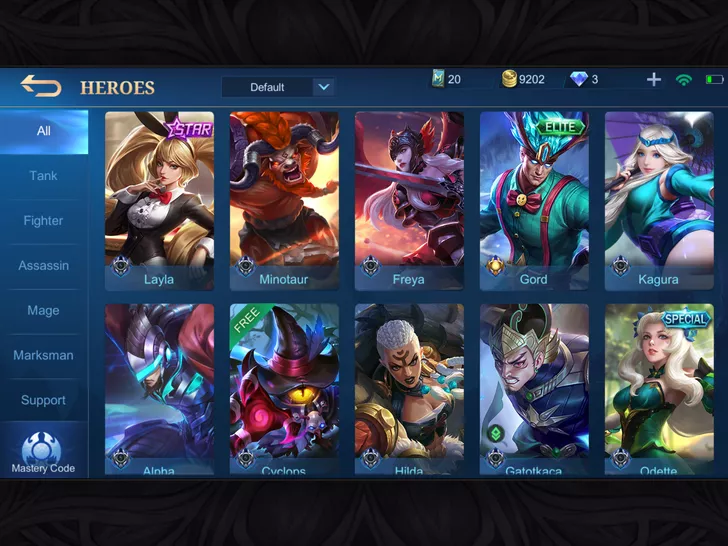
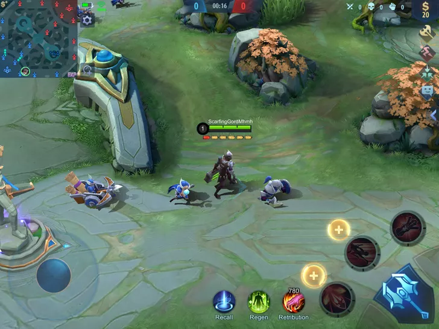
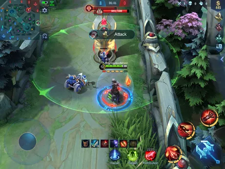
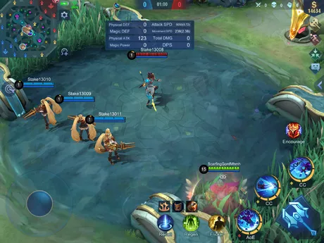
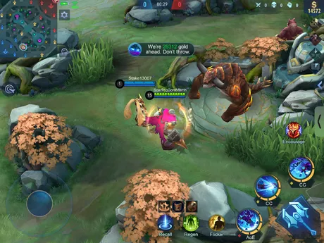
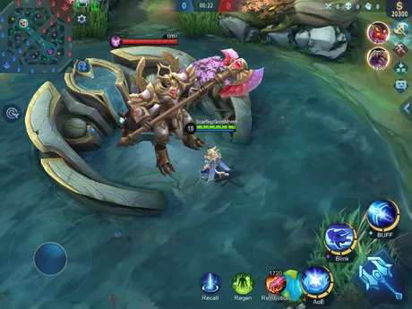
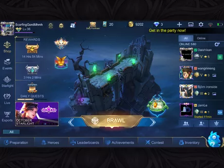
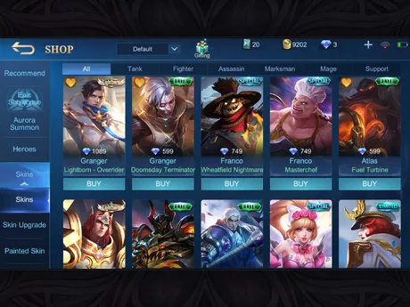

STEPS ON HOW TO PLAY ML
1
Choose your hero! A player needs someone to have something, so decide who you want to main first! This decision-making skill will be important when you reach Epic in Mobile Legends (Ranked Game).
- If your new to the game, take advantage of the heroes you get first (AKA Eudora, Zillong, Layla, and Miya). Once you get the hang of someone, choose someone that can be based on your needs.
- If you decided to be a Mage player, you can use Gord, Esmeralda, Alice, or Aurora.
- If you want to be a Fighter, use Freya, Bane, Badang, Sun, or Guinevere.
- If you want to be a Tank, use Tigreal, Atlas, Gatokaca, or Grock.
- If you need a Marksman, use Granger, Lesley, or Claude.
- If you like the Support role, use Angela, Rafaela, or Diggie.
- If you rely on quick kills (Assassin), use Natalia, Helcurt, or Hanzo.
- The possibilities can be endless with your selections!
2
Be wary of your laning. In the game, you will have the side lanes formatted for the first seven minion waves. The EXP lane will level your hero quicker, and the Gold lane will let you earn more gold for your equipment.
- The one carrying the special needs is the siege/cannon minion (AKA the one with an arrow).

3
Push your lane! Since the goal of the game is to destroy the enemy's base, you should destroy the turrets that are blocking your way. All turrets have a shield on part of the game, which will make it harder but can be helpful in any given situation.
- Make sure the minions get the damage while you hit it. Without them, you will receive half of the damage for the turrets and you could execute yourself.

4
Know how to gank. Ganking is a way to join team fights safely and suddenly for the enemies. To gank, go to a bush where a fight is occurring. You should then use a skill that can suddenly change the tides of the battle.
- For example, use Guinevere's 2nd skill as a way to suddenly surprise the enemies when ganking.

5
Communicate! Since teamwork relies on help, tell them if you want them as a backup or to retreat when needed. These controls can be seen at the top-right corner.
- You can also hold to discover Smart Battlefield Messages. It tells them that they are behind/ahead on Gold or Turrets, or to Attack the Lord/Turtle.
- Also, you can use Emotes! Emotes are a fun way to express the current situation. You can give a Thumbs-Up to a :P emote! (Note: You will need to buy them via Diamonds.)

6
Decide on the Lord. Within 8 minutes of the game (or later, depending on the Turtle), the Sanctuary Lord will spawn in the game. The Lord can be helpful and let you push for the team.
- It's better to not attack the Lord until you wipe out the enemy team. This is so the enemy team avoids ganking for the last shot.
- Also, wait for the 12-minute mark. The Lord will be enhanced and will attack a turret that's on the lane.

7
Push for the win! If you manage to wipe your enemy team out, don't go for the creeps right away! Try following your minions and attack the turrets.
- Remember, killing enemy heroes isn't the objective, destroying the base turret is.
8
Upgrade your Emblems. Emblems are light tune-ups for a hero and can provide you with quick assistance! Try focusing on grabbing Magic Dust from certain events or emblems from achievements.

9
Do other game modes. Once you have the hang of Classic mode, try other game modes that can enhance your experience! If you want a quick game, use Brawl Mode. If you want to discover a fun chess experience, play Magic Chess.

10
Buy items in the shop.The shop is a great way to increase your collection of heroes and skins. Once you have the hang of newer heroes, try getting another one.
- If you want to be stylish, buy skins for your heroes! Even though it only gives a small boost for your hero, it will impress your team! (Diamonds are needed to get skins, or via limited-time events that can give it for free or etc.)